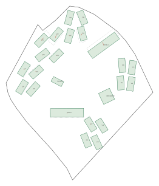
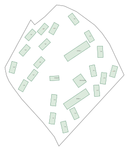
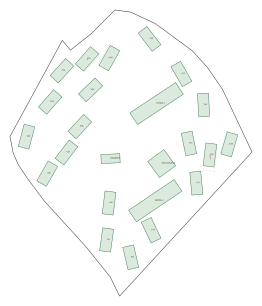
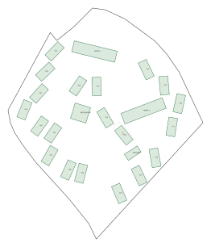

144 buildings · 6 spatial layouts · all checks passed · active Rhino model unchanged.
Dashed outlines show original positions. Green outlines show proposed positions; rust lines indicate movement. Orientations and heights stay fixed. The minimum directional side gap is approximately 3.05 m.
Detailed report and movement vectors · Script instructions
18 buildings moved · maximum 5.943 m

18 buildings moved · maximum 5.943 m
7 buildings moved · maximum 2.289 m

6 buildings moved · maximum 4.404 m

5 buildings moved · maximum 4.921 m

5 buildings moved · maximum 4.921 m